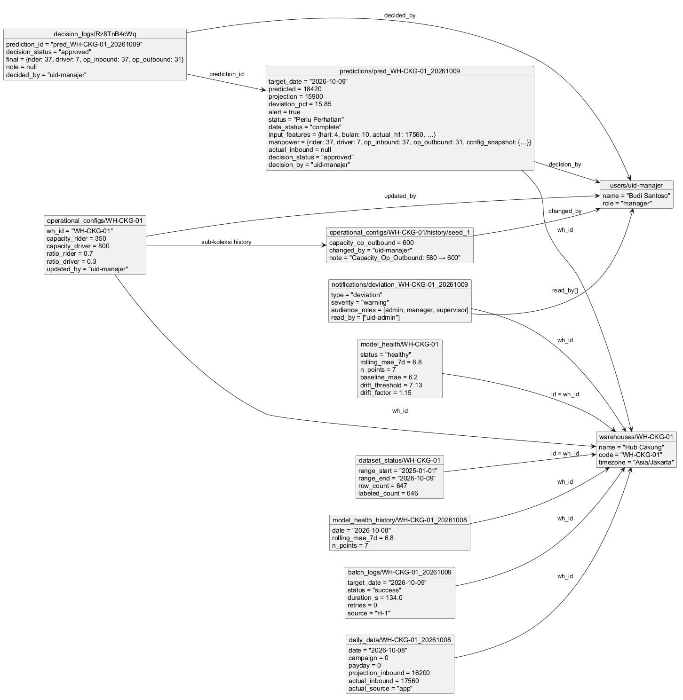

Model dokumen NoSQL yang benar-benar dipakai aplikasi wipas-app.
docs/firestore_schema.md v1.0 dari repo wipas-research. Script menulis koleksi hasil batch dengan Admin SDK; aplikasi hanya menulis field milik App: predictions.actual_*, predictions.decision_*, decision_logs, operational_configs + /history, dan notifications.read_by, dibatasi oleh firebase/firestore.rules.| Keputusan | Strategi | Alasan (terkait fitur WIPAS) | Contoh nyata |
|---|---|---|---|
| Fitur prediktor & rekomendasi manpower | Embed di predictions | Selalu dibaca bersama prediksi (Beranda, Prediksi, Manpower); satu dokumen = satu baca, hemat kuota 50.000 baca/hari. config_snapshot membekukan kapasitas saat dihitung sehingga "Cara hitung" konsisten walau konfigurasi berubah. | predictions/pred_WH-CKG-01_20261009.manpower = {rider: 37, driver: 7, op_inbound: 37, op_outbound: 31, config_snapshot: {...}} |
| Feature importance & catatan script | Embed (map / array) di predictions dan model_health | Ukuran kecil dan dibaca utuh ("Faktor pendorong", catatan fallback). | feature_importance.actual_h1 = 0.27, notes = ["Fallback H-2 …"] |
| Status keputusan terkini | Embed field App decision_* di predictions | Beranda, Manpower, dan Riwayat cukup membaca prediksi (tanpa query log tambahan); Viewer tetap dapat membaca prediksi tetapi UI menyembunyikan keputusan. | decision_status = "adjusted", decision_manpower = {rider: 40, …} |
| Riwayat keputusan | Referensi lewat prediction_id (koleksi decision_logs) | Append-only milik App; rules melarang update/delete dan menolak Viewer. Ditulis dalam satu batch bersama decision_*. | decision_logs/{auto}.prediction_id = "pred_WH-CKG-01_20261009" |
| Riwayat konfigurasi | Sub-koleksi operational_configs/{wh_id}/history + transaksi | Salinan konfigurasi sesudah perubahan + changed_by, changed_at, note; Python tidak membaca/menulisnya. | operational_configs/WH-CKG-01/history/{auto} |
| Status baca notifikasi | Array read_by di dokumen notifikasi (arrayUnion) | Satu baca per notifikasi tanpa koleksi tambahan; rules hanya mengizinkan penerima menambahkan uid sendiri. | read_by = ["uid-admin"] |
| Nama pembuat log | Denormalisasi *_by_name (ekstensi App) | Rules hanya mengizinkan membaca profil sendiri; nama disalin saat menulis. | decided_by_name = "Budi Santoso" |
| ID dokumen | Deterministik pred_{wh_id}_{YYYYMMDD}, {type}_{wh_id}_{YYYYMMDD}, {wh_id}_{YYYYMMDD}[_runN] | Batch idempoten (set(merge=True)): menjalankan ulang script tidak menggandakan dokumen. | pred_WH-CKG-01_20261009 |
| Hindari collection group besar | Koleksi top-level per jenis + query wh_id + rentang tanggal + limit | Kuota Spark; setiap query dibatasi (≤ 31 prediksi, 30 notifikasi, 60 keputusan). | where wh_id == … where target_date ≥ … limit 31 |
WH-CKG-01name : stringcode : stringtimezone : stringcreated_at : timestampuid-manajerrole : stringname : stringWH-CKG-01_20261008wh_id : stringdate : string YYYY-MM-DDcampaign : int 0/1hari_libur : int 0/1payday : int 0/1pickup_request_h1 : intprojection_inbound : intbacklog_h1 : intactual_inbound : int|nullactual_source : stringactual_synced_at : timestamprow_hash : stringsource_file : stringimported_at : timestamppred_WH-CKG-01_20261009wh_id : stringtarget_date : string YYYY-MM-DDpredicted : intprojection : int|nulldeviation_pct : number|nullalert : boolstatus : stringdata_status : stringsource : stringmodel_version : stringgenerated_at : timestampinput_features : map<string,number>feature_importance : map<string,number>manpower : mapis_backfill : boolis_dummy_data : boolnotes : array<string>evaluated : booldaily_error_pct : number|nullevaluated_at : timestampactual_inbound : intactual_note : stringactual_input_by : stringactual_input_at : timestampdecision_status : stringdecision_by : stringdecision_at : timestampdecision_note : stringdecision_manpower : mapWH-CKG-01wh_id : stringcapacity_rider : numbercapacity_driver : numbercapacity_op_inbound : numbercapacity_op_outbound : numberratio_rider : numberratio_driver : numberrounding : stringupdated_by : stringupdated_at : timestampXk2pQ9aLm3(salinan field konfigurasi) : —changed_by : stringchanged_at : timestampnote : stringchanged_by_name : stringWH-CKG-01wh_id : stringstatus : stringrolling_mae_7d : numberrolling_window_days : intn_points : intlast_evaluated_date : string YYYY-MM-DDbaseline_mae : numberdrift_threshold : numberdrift_factor : numbermodel_version : stringmae_validation : numbermae_validation_paket : numberrmse : numberrmse_paket : numberr2 : numberfeature_importance : map<string,number>trained_at : string ISO-8601is_dummy_data : boolupdated_at : timestampWH-CKG-01_20261008wh_id : stringdate : string YYYY-MM-DDrolling_mae_7d : numberstatus : stringbaseline_mae : numberdrift_threshold : numbern_points : intmodel_version : stringupdated_at : timestampWH-CKG-01_20261009wh_id : stringtarget_date : string YYYY-MM-DDstarted_at : timestampfinished_at : timestampduration_s : numberstatus : stringmessage : stringretries : intsource : string|nulldata_status : string|nullmodel_version : string|nullpredicted : int|nullevaluated_dates : array<string>error : string|nulldry_run : boolWH-CKG-01wh_id : stringlast_import_at : timestamprange_start : stringrange_end : stringrow_count : intlabeled_count : intlast_actual_date : string|nulltarget_dates : array<string>missing_dates : array<string>source_file : stringis_dummy_data : boollast_import_written_rows : intlast_batch_at : timestamplast_batch_status : stringlast_batch_target_date : stringdeviation_WH-CKG-01_20261009type : stringtitle : stringbody : stringseverity : stringwh_id : stringtarget_date : stringcreated_at : timestampaudience_roles : array<string>updated_at : timestampbatch_status : stringbatch_log_id : stringdeviation_pct : numberrolling_mae_7d : numberdrift_threshold : numberread_by : array<string>Rz8TnB4cWqwh_id : stringtarget_date : stringprediction_id : stringrecommended : mapfinal : mapdecision_status : stringnote : string|nulldecided_by : stringdecided_at : timestampdecided_by_name : stringReferensi antar koleksi: wh_id → warehouses; prediction_id → predictions; decided_by, decision_by, changed_by, updated_by, actual_input_by, read_by[] → users; batch_log_id → batch_logs.
Satu objek contoh per koleksi. Nilai bersifat ilustrasi (skenario desain: Predicted 18.420 vs Projection 15.900), bukan hasil model.
@startuml db_object
skinparam defaultFontName Arial
skinparam shadowing false
left to right direction
object "warehouses/WH-CKG-01" as w {
name = "Hub Cakung"
code = "WH-CKG-01"
timezone = "Asia/Jakarta"
}
object "users/uid-manajer" as u {
name = "Budi Santoso"
role = "manager"
}
object "daily_data/WH-CKG-01_20261008" as d {
date = "2026-10-08"
campaign = 0
payday = 0
projection_inbound = 16200
actual_inbound = 17560
actual_source = "app"
}
object "predictions/pred_WH-CKG-01_20261009" as p {
target_date = "2026-10-09"
predicted = 18420
projection = 15900
deviation_pct = 15.85
alert = true
status = "Perlu Perhatian"
data_status = "complete"
input_features = {hari: 4, bulan: 10, actual_h1: 17560, …}
manpower = {rider: 37, driver: 7, op_inbound: 37, op_outbound: 31, config_snapshot: {…}}
actual_inbound = null
decision_status = "approved"
decision_by = "uid-manajer"
}
object "operational_configs/WH-CKG-01" as c {
wh_id = "WH-CKG-01"
capacity_rider = 350
capacity_driver = 800
ratio_rider = 0.7
ratio_driver = 0.3
updated_by = "uid-manajer"
}
object "operational_configs/WH-CKG-01/history/seed_1" as h {
capacity_op_outbound = 600
changed_by = "uid-manajer"
note = "Capacity_Op_Outbound: 580 → 600"
}
object "decision_logs/Rz8TnB4cWq" as dl {
prediction_id = "pred_WH-CKG-01_20261009"
decision_status = "approved"
final = {rider: 37, driver: 7, op_inbound: 37, op_outbound: 31}
note = null
decided_by = "uid-manajer"
}
object "model_health/WH-CKG-01" as mh {
status = "healthy"
rolling_mae_7d = 6.8
n_points = 7
baseline_mae = 6.2
drift_threshold = 7.13
drift_factor = 1.15
}
object "model_health_history/WH-CKG-01_20261008" as mhh {
date = "2026-10-08"
rolling_mae_7d = 6.8
n_points = 7
}
object "batch_logs/WH-CKG-01_20261009" as b {
target_date = "2026-10-09"
status = "success"
duration_s = 134.0
retries = 0
source = "H-1"
}
object "dataset_status/WH-CKG-01" as ds {
range_start = "2025-01-01"
range_end = "2026-10-09"
row_count = 647
labeled_count = 646
}
object "notifications/deviation_WH-CKG-01_20261009" as n {
type = "deviation"
severity = "warning"
audience_roles = [admin, manager, supervisor]
read_by = ["uid-admin"]
}
p --> w : wh_id
d --> w : wh_id
c --> w : wh_id
c --> h : sub-koleksi history
c --> u : updated_by
h --> u : changed_by
dl --> p : prediction_id
dl --> u : decided_by
p --> u : decision_by
mh --> w : id = wh_id
mhh --> w : wh_id
b --> w : wh_id
ds --> w : id = wh_id
n --> w : wh_id
n --> u : read_by[]
@enduml

| No | Nama Field | Tipe Data | Koleksi | Deskripsi | Constraint / Index |
|---|---|---|---|---|---|
| 1 | name | string | warehouses/{wh_id} | Nama gudang | wajib |
| 2 | code | string | warehouses/{wh_id} | Sama dengan wh_id | wajib |
| 3 | timezone | string | warehouses/{wh_id} | Asia/Jakarta | wajib |
| 4 | created_at | timestamp | warehouses/{wh_id} | Waktu seed | wajib; rules: klien hanya baca |
| 5 | role | string | users/{uid} | admin | manager | supervisor | viewer | wajib; sumber RBAC rules; rules: baca pemilik saja, tanpa tulis klien |
| 6 | name | string | users/{uid} | Nama tampil (email diambil dari Firebase Auth) | wajib |
| 7 | wh_id | string | daily_data/{wh_id}_{YYYYMMDD} | Gudang | wajib |
| 8 | date | string YYYY-MM-DD | daily_data/{wh_id}_{YYYYMMDD} | Tanggal data (Asia/Jakarta) | wajib |
| 9 | campaign | int 0/1 | daily_data/{wh_id}_{YYYYMMDD} | Ada campaign | wajib; null bila kosong di Excel |
| 10 | hari_libur | int 0/1 | daily_data/{wh_id}_{YYYYMMDD} | Hari libur | wajib |
| 11 | payday | int 0/1 | daily_data/{wh_id}_{YYYYMMDD} | Periode gajian | wajib |
| 12 | pickup_request_h1 | int | daily_data/{wh_id}_{YYYYMMDD} | Pickup request H-1 relatif terhadap date | wajib |
| 13 | projection_inbound | int | daily_data/{wh_id}_{YYYYMMDD} | Projection Tim DI untuk date | wajib |
| 14 | backlog_h1 | int | daily_data/{wh_id}_{YYYYMMDD} | Backlog H-1 relatif terhadap date | wajib |
| 15 | actual_inbound | int|null | daily_data/{wh_id}_{YYYYMMDD} | Actual dari Excel atau disalin evaluate dari aplikasi | wajib |
| 16 | actual_source | string | daily_data/{wh_id}_{YYYYMMDD} | excel | app (app tidak pernah ditimpa Excel) | opsional |
| 17 | actual_synced_at | timestamp | daily_data/{wh_id}_{YYYYMMDD} | Saat actual aplikasi disalin | opsional |
| 18 | row_hash | string | daily_data/{wh_id}_{YYYYMMDD} | SHA-1 isi baris Excel | wajib* |
| 19 | source_file | string | daily_data/{wh_id}_{YYYYMMDD} | Nama berkas Excel | wajib* |
| 20 | imported_at | timestamp | daily_data/{wh_id}_{YYYYMMDD} | Waktu impor | wajib*; rules: klien hanya baca |
| 21 | wh_id | string | predictions/pred_{wh_id}_{YYYYMMDD} | Gudang | wajib; indeks (wh_id ASC, target_date DESC), (wh_id, evaluated, target_date DESC) |
| 22 | target_date | string YYYY-MM-DD | predictions/pred_{wh_id}_{YYYYMMDD} | Tanggal yang diprediksi | wajib |
| 23 | predicted | int | predictions/pred_{wh_id}_{YYYYMMDD} | Prediksi RF (paket utuh) | wajib |
| 24 | projection | int|null | predictions/pred_{wh_id}_{YYYYMMDD} | Projection Tim DI | wajib |
| 25 | deviation_pct | number|null | predictions/pred_{wh_id}_{YYYYMMDD} | (predicted − projection) / projection × 100, 2 desimal | wajib |
| 26 | alert | bool | predictions/pred_{wh_id}_{YYYYMMDD} | |deviation_pct| > 15 | wajib |
| 27 | status | string | predictions/pred_{wh_id}_{YYYYMMDD} | "Perlu Perhatian" | "Normal" | wajib |
| 28 | data_status | string | predictions/pred_{wh_id}_{YYYYMMDD} | complete | incomplete_fallback_h2 | wajib |
| 29 | source | string | predictions/pred_{wh_id}_{YYYYMMDD} | H-1 | H-2 | wajib |
| 30 | model_version | string | predictions/pred_{wh_id}_{YYYYMMDD} | Versi model | wajib |
| 31 | generated_at | timestamp | predictions/pred_{wh_id}_{YYYYMMDD} | Waktu batch | wajib |
| 32 | input_features | map<string,number> | predictions/pred_{wh_id}_{YYYYMMDD} | Embed: hari, bulan, campaign, hari_libur, payday, pickup_request_h1, projection_inbound, backlog_h1, actual_h2, actual_h1 | wajib |
| 33 | feature_importance | map<string,number> | predictions/pred_{wh_id}_{YYYYMMDD} | Embed: importance 10 fitur (≈ 1) | wajib |
| 34 | manpower | map | predictions/pred_{wh_id}_{YYYYMMDD} | Embed: rider, driver, op_inbound, op_outbound + config_snapshot (kapasitas, rasio, rounding, source) | wajib |
| 35 | is_backfill | bool | predictions/pred_{wh_id}_{YYYYMMDD} | Estimasi historis walk-forward | wajib |
| 36 | is_dummy_data | bool | predictions/pred_{wh_id}_{YYYYMMDD} | Memakai Excel dummy | wajib |
| 37 | notes | array<string> | predictions/pred_{wh_id}_{YYYYMMDD} | Catatan (fallback, imputasi, backfill) | wajib |
| 38 | evaluated | bool | predictions/pred_{wh_id}_{YYYYMMDD} | Sudah dievaluasi | wajib (Python evaluate) |
| 39 | daily_error_pct | number|null | predictions/pred_{wh_id}_{YYYYMMDD} | |predicted − actual| / actual × 100 | opsional (evaluate) |
| 40 | evaluated_at | timestamp | predictions/pred_{wh_id}_{YYYYMMDD} | Waktu evaluasi | opsional (evaluate) |
| 41 | actual_inbound | int | predictions/pred_{wh_id}_{YYYYMMDD} | Actual input pengguna | App; rules: int ≥ 0, admin/supervisor, hanya actual_* |
| 42 | actual_note | string | predictions/pred_{wh_id}_{YYYYMMDD} | Catatan actual | App; rules: ≤ 500 karakter |
| 43 | actual_input_by | string | predictions/pred_{wh_id}_{YYYYMMDD} | uid penginput (backfill: "backfill:excel") | App; rules: = request.auth.uid |
| 44 | actual_input_at | timestamp | predictions/pred_{wh_id}_{YYYYMMDD} | Waktu input | App |
| 45 | decision_status | string | predictions/pred_{wh_id}_{YYYYMMDD} | approved | adjusted | App; rules: admin/manager, hanya decision_* |
| 46 | decision_by | string | predictions/pred_{wh_id}_{YYYYMMDD} | uid pengambil keputusan | App; rules: = request.auth.uid |
| 47 | decision_at | timestamp | predictions/pred_{wh_id}_{YYYYMMDD} | Waktu keputusan | App |
| 48 | decision_note | string | predictions/pred_{wh_id}_{YYYYMMDD} | Alasan | App; rules: wajib bila adjusted |
| 49 | decision_manpower | map | predictions/pred_{wh_id}_{YYYYMMDD} | Manpower final (rider, driver, op_inbound, op_outbound) | App; rules: int ≥ 0 |
| 50 | wh_id | string | operational_configs/{wh_id} | Gudang | wajib; rules: = ID dokumen |
| 51 | capacity_rider | number | operational_configs/{wh_id} | Paket/orang/hari Rider (default 350) | rules: > 0 |
| 52 | capacity_driver | number | operational_configs/{wh_id} | Driver (default 800) | rules: > 0 |
| 53 | capacity_op_inbound | number | operational_configs/{wh_id} | Op. Inbound (default 500) | rules: > 0 |
| 54 | capacity_op_outbound | number | operational_configs/{wh_id} | Op. Outbound (default 600) | rules: > 0 |
| 55 | ratio_rider | number | operational_configs/{wh_id} | Rasio Rider (default 0,70) | rules: > 0; ratio_rider + ratio_driver = 1,00 ± 0,001 |
| 56 | ratio_driver | number | operational_configs/{wh_id} | Rasio Driver (default 0,30) | rules: > 0 |
| 57 | rounding | string | operational_configs/{wh_id} | ceil | wajib |
| 58 | updated_by | string | operational_configs/{wh_id} | "wipas-research:seed-config" atau uid | rules: = request.auth.uid saat App menulis |
| 59 | updated_at | timestamp | operational_configs/{wh_id} | Waktu ubah | rules: hanya key yang diizinkan |
| 60 | (salinan field konfigurasi) | — | operational_configs/{wh_id}/history/{auto} | wh_id, capacity_*, ratio_*, rounding, updated_by, updated_at sesudah perubahan | rules: kapasitas > 0, rasio = 1,00 |
| 61 | changed_by | string | operational_configs/{wh_id}/history/{auto} | uid pengubah | rules: = request.auth.uid |
| 62 | changed_at | timestamp | operational_configs/{wh_id}/history/{auto} | Waktu ubah | orderBy changed_at DESC |
| 63 | note | string | operational_configs/{wh_id}/history/{auto} | Ringkasan "Label: lama → baru" | |
| 64 | changed_by_name | string | operational_configs/{wh_id}/history/{auto} | Nama pengubah (ekstensi App) | tanpa update/delete |
| 65 | wh_id | string | model_health/{wh_id} | Gudang | wajib |
| 66 | status | string | model_health/{wh_id} | healthy | degraded | wajib |
| 67 | rolling_mae_7d | number | model_health/{wh_id} | Rata-rata daily_error_pct 7 hari (%) | wajib |
| 68 | rolling_window_days | int | model_health/{wh_id} | 7 | wajib |
| 69 | n_points | int | model_health/{wh_id} | Jumlah hari dalam jendela | wajib; healthy bila < 7 |
| 70 | last_evaluated_date | string YYYY-MM-DD | model_health/{wh_id} | Tanggal evaluasi terakhir | wajib |
| 71 | baseline_mae | number | model_health/{wh_id} | MAE validasi model aktif (%) | wajib |
| 72 | drift_threshold | number | model_health/{wh_id} | round(1,15 × baseline, 4) | wajib |
| 73 | drift_factor | number | model_health/{wh_id} | 1,15 | wajib |
| 74 | model_version | string | model_health/{wh_id} | Versi model | wajib |
| 75 | mae_validation | number | model_health/{wh_id} | MAE validasi (%) | wajib |
| 76 | mae_validation_paket | number | model_health/{wh_id} | MAE validasi (paket) | wajib |
| 77 | rmse | number | model_health/{wh_id} | RMSE (% dari rata-rata actual) | wajib |
| 78 | rmse_paket | number | model_health/{wh_id} | RMSE (paket) | wajib |
| 79 | r2 | number | model_health/{wh_id} | R² validasi | wajib |
| 80 | feature_importance | map<string,number> | model_health/{wh_id} | Importance model aktif | wajib |
| 81 | trained_at | string ISO-8601 | model_health/{wh_id} | Waktu pelatihan | wajib |
| 82 | is_dummy_data | bool | model_health/{wh_id} | Data dummy | wajib |
| 83 | updated_at | timestamp | model_health/{wh_id} | Waktu hitung | wajib; rules: klien hanya baca |
| 84 | wh_id | string | model_health_history/{wh_id}_{YYYYMMDD} | Gudang | indeks (wh_id ASC, date DESC) |
| 85 | date | string YYYY-MM-DD | model_health_history/{wh_id}_{YYYYMMDD} | Tanggal data | wajib |
| 86 | rolling_mae_7d | number | model_health_history/{wh_id}_{YYYYMMDD} | Rolling MAE (%) | wajib |
| 87 | status | string | model_health_history/{wh_id}_{YYYYMMDD} | healthy | degraded | wajib |
| 88 | baseline_mae | number | model_health_history/{wh_id}_{YYYYMMDD} | Baseline (%) | wajib |
| 89 | drift_threshold | number | model_health_history/{wh_id}_{YYYYMMDD} | Ambang (%) | wajib |
| 90 | n_points | int | model_health_history/{wh_id}_{YYYYMMDD} | Jumlah titik | wajib |
| 91 | model_version | string | model_health_history/{wh_id}_{YYYYMMDD} | Versi model | wajib |
| 92 | updated_at | timestamp | model_health_history/{wh_id}_{YYYYMMDD} | Waktu tulis | wajib |
| 93 | wh_id | string | batch_logs/{wh_id}_{YYYYMMDD}[_runN] | Gudang | indeks (wh_id ASC, started_at DESC) |
| 94 | target_date | string YYYY-MM-DD | batch_logs/{wh_id}_{YYYYMMDD}[_runN] | Tanggal target | wajib |
| 95 | started_at | timestamp | batch_logs/{wh_id}_{YYYYMMDD}[_runN] | Mulai | wajib |
| 96 | finished_at | timestamp | batch_logs/{wh_id}_{YYYYMMDD}[_runN] | Selesai | wajib |
| 97 | duration_s | number | batch_logs/{wh_id}_{YYYYMMDD}[_runN] | Durasi (detik) | wajib |
| 98 | status | string | batch_logs/{wh_id}_{YYYYMMDD}[_runN] | success | skipped | failed | wajib |
| 99 | message | string | batch_logs/{wh_id}_{YYYYMMDD}[_runN] | Keterangan | wajib |
| 100 | retries | int | batch_logs/{wh_id}_{YYYYMMDD}[_runN] | Jumlah retry (maks 3 per operasi) | wajib |
| 101 | source | string|null | batch_logs/{wh_id}_{YYYYMMDD}[_runN] | H-1 | H-2 | wajib |
| 102 | data_status | string|null | batch_logs/{wh_id}_{YYYYMMDD}[_runN] | Status data | wajib |
| 103 | model_version | string|null | batch_logs/{wh_id}_{YYYYMMDD}[_runN] | Versi model | wajib |
| 104 | predicted | int|null | batch_logs/{wh_id}_{YYYYMMDD}[_runN] | Prediksi | wajib |
| 105 | evaluated_dates | array<string> | batch_logs/{wh_id}_{YYYYMMDD}[_runN] | Actual yang dievaluasi di awal batch | wajib |
| 106 | error | string|null | batch_logs/{wh_id}_{YYYYMMDD}[_runN] | Pesan galat | wajib |
| 107 | dry_run | bool | batch_logs/{wh_id}_{YYYYMMDD}[_runN] | Mode uji | wajib; rules: klien hanya baca |
| 108 | wh_id | string | dataset_status/{wh_id} | Gudang | wajib |
| 109 | last_import_at | timestamp | dataset_status/{wh_id} | Impor terakhir | wajib |
| 110 | range_start | string | dataset_status/{wh_id} | Tanggal pertama di Excel | wajib |
| 111 | range_end | string | dataset_status/{wh_id} | Tanggal terakhir di Excel | wajib |
| 112 | row_count | int | dataset_status/{wh_id} | Jumlah baris | wajib |
| 113 | labeled_count | int | dataset_status/{wh_id} | Baris dengan actual | wajib |
| 114 | last_actual_date | string|null | dataset_status/{wh_id} | Actual terakhir | wajib |
| 115 | target_dates | array<string> | dataset_status/{wh_id} | Baris masa depan | wajib |
| 116 | missing_dates | array<string> | dataset_status/{wh_id} | Celah tanggal | wajib |
| 117 | source_file | string | dataset_status/{wh_id} | Berkas | wajib |
| 118 | is_dummy_data | bool | dataset_status/{wh_id} | Data dummy | wajib |
| 119 | last_import_written_rows | int | dataset_status/{wh_id} | Baris daily_data yang ditulis | wajib |
| 120 | last_batch_at | timestamp | dataset_status/{wh_id} | Batch terakhir | opsional |
| 121 | last_batch_status | string | dataset_status/{wh_id} | Status batch terakhir | opsional |
| 122 | last_batch_target_date | string | dataset_status/{wh_id} | Target batch terakhir | opsional |
| 123 | type | string | notifications/{type}_{wh_id}_{YYYYMMDD} | deviation | degraded | incomplete | batch | wajib |
| 124 | title | string | notifications/{type}_{wh_id}_{YYYYMMDD} | Judul | wajib |
| 125 | body | string | notifications/{type}_{wh_id}_{YYYYMMDD} | Isi | wajib |
| 126 | severity | string | notifications/{type}_{wh_id}_{YYYYMMDD} | info | warning | error | wajib |
| 127 | wh_id | string | notifications/{type}_{wh_id}_{YYYYMMDD} | Gudang | indeks (wh_id ASC, created_at DESC) |
| 128 | target_date | string | notifications/{type}_{wh_id}_{YYYYMMDD} | Tanggal target | wajib |
| 129 | created_at | timestamp | notifications/{type}_{wh_id}_{YYYYMMDD} | Waktu dibuat | indeks (audience_roles CONTAINS, created_at DESC) |
| 130 | audience_roles | array<string> | notifications/{type}_{wh_id}_{YYYYMMDD} | deviation: admin, manager, supervisor · degraded: admin, manager, viewer · incomplete: admin, supervisor · batch: admin | rules: baca bila role ∈ audience_roles |
| 131 | updated_at | timestamp | notifications/{type}_{wh_id}_{YYYYMMDD} | Hanya batch | opsional |
| 132 | batch_status | string | notifications/{type}_{wh_id}_{YYYYMMDD} | batch: success/failed | opsional |
| 133 | batch_log_id | string | notifications/{type}_{wh_id}_{YYYYMMDD} | batch | opsional |
| 134 | deviation_pct | number | notifications/{type}_{wh_id}_{YYYYMMDD} | deviation | opsional |
| 135 | rolling_mae_7d | number | notifications/{type}_{wh_id}_{YYYYMMDD} | degraded | opsional |
| 136 | drift_threshold | number | notifications/{type}_{wh_id}_{YYYYMMDD} | degraded | opsional |
| 137 | read_by | array<string> | notifications/{type}_{wh_id}_{YYYYMMDD} | uid yang sudah membaca (arrayUnion) | App; rules: penerima hanya menambah uid sendiri |
| 138 | wh_id | string | decision_logs/{auto} | Gudang | indeks (wh_id ASC, decided_at DESC) |
| 139 | target_date | string | decision_logs/{auto} | Tanggal target | |
| 140 | prediction_id | string | decision_logs/{auto} | → predictions | indeks (prediction_id ASC, decided_at DESC) |
| 141 | recommended | map | decision_logs/{auto} | Manpower rekomendasi | |
| 142 | final | map | decision_logs/{auto} | Manpower final | rules: int ≥ 0 |
| 143 | decision_status | string | decision_logs/{auto} | approved | adjusted | rules |
| 144 | note | string|null | decision_logs/{auto} | Alasan | rules: wajib bila adjusted |
| 145 | decided_by | string | decision_logs/{auto} | uid | rules: = request.auth.uid |
| 146 | decided_at | timestamp | decision_logs/{auto} | Waktu | rules: viewer ditolak baca; tanpa update/delete |
| 147 | decided_by_name | string | decision_logs/{auto} | Nama (ekstensi App) |
| Koleksi | Baca | Tulis |
|---|---|---|
| predictions | semua user login | admin/supervisor: hanya actual_*; admin/manager: hanya decision_*; tanpa create/delete |
| operational_configs | semua user login | admin/manager dengan validasi kapasitas & rasio, wh_id = ID |
| operational_configs/{wh_id}/history, decision_logs | admin, manager, supervisor | create admin/manager atas nama sendiri; tanpa update/delete |
| notifications | role ∈ audience_roles | penerima hanya menambah uid sendiri ke read_by |
| users/{uid} | pemilik | tidak ada (Console) |
| daily_data, model_health, model_health_history, batch_logs, dataset_status, warehouses | semua user login | tidak ada (Admin SDK) |
Dibuat oleh tools/gen_db_docs.py dari tools/docs_db_model.py; sumber: docs/firestore_schema.md, firebase/firestore.rules, firebase/firestore.indexes.json, lib/core/data/models.dart.